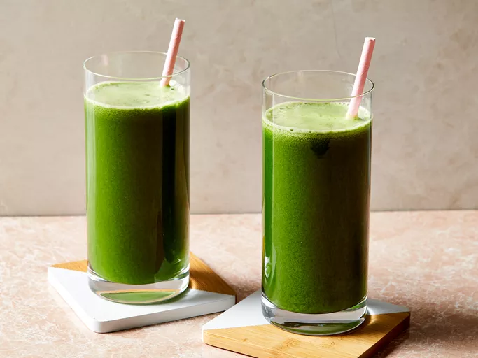

Healthy Green Juice
This green juice recipe is great for detoxing after the holidays or whenever you have overdone it! It's worth buying organic celery, even if you buy conventional for everything else. Adjust fruit and veggie amounts to suit your personal taste. More apples equals a sweeter drink.
Ingredients
- 4 stalks celery, leaves removed
- 2 green apples, halved
- 1 cucumber
- 6 leaves kale
- ½ lemon, peeled
- 1 (1 inch) piece fresh ginger
Steps
- Gather all ingredients.
- Process celery, apples, cucumber, kale, lemon, and ginger through a juicer.
- Serve immediately or store in a glass jar in the fridge for up to one day; shake before drinking.